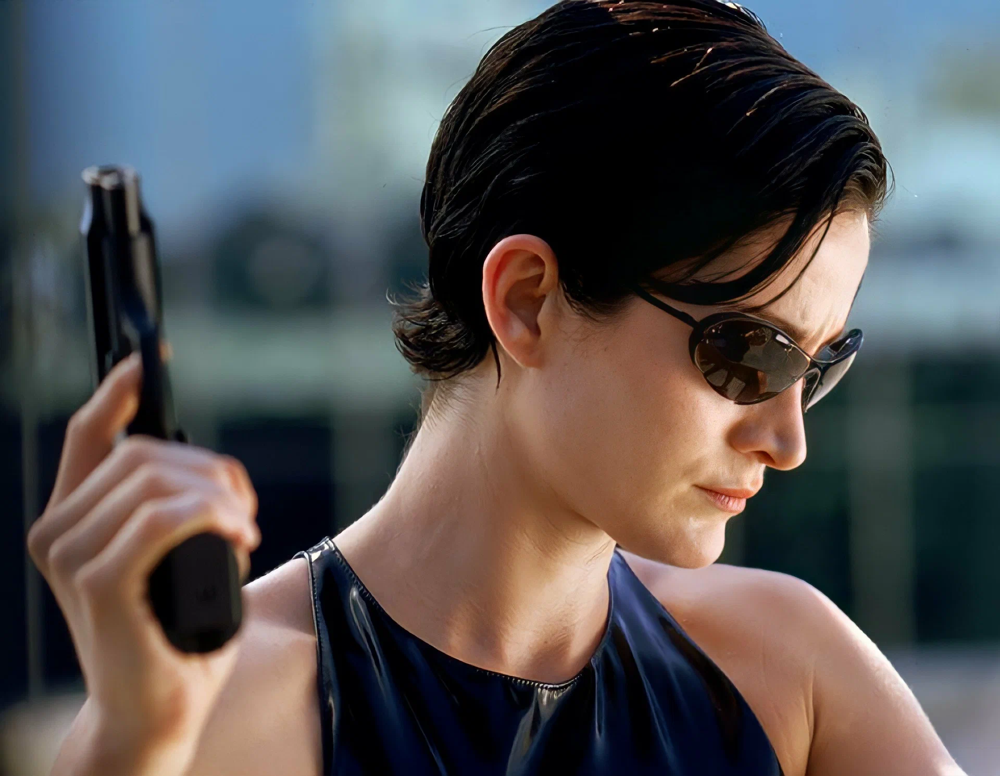
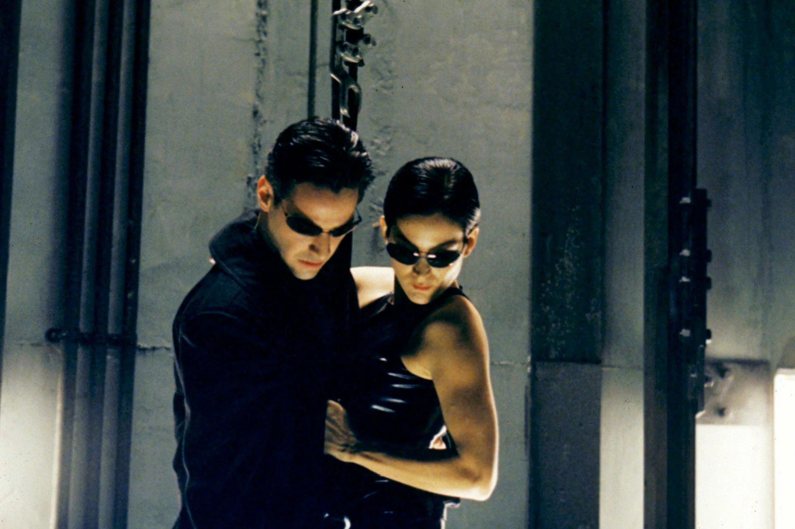
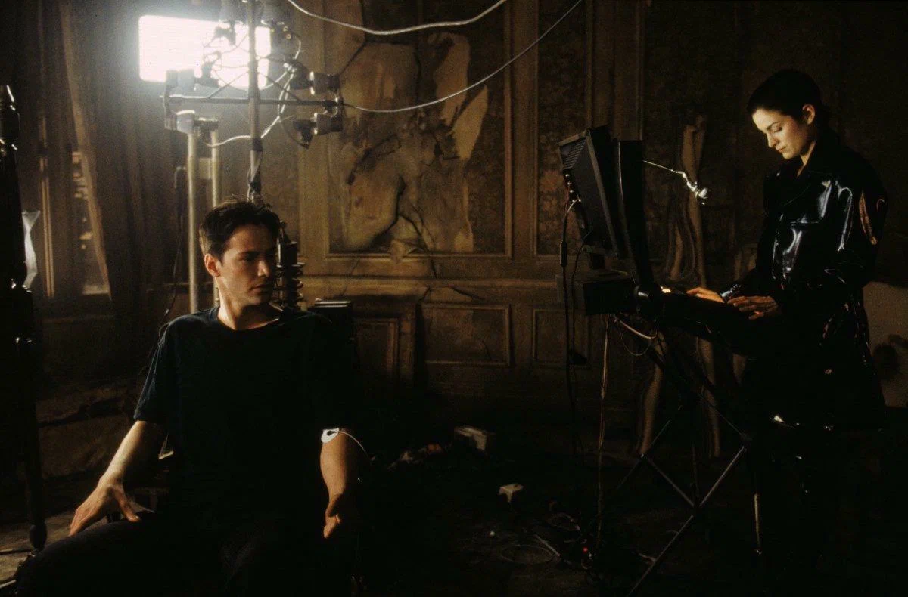
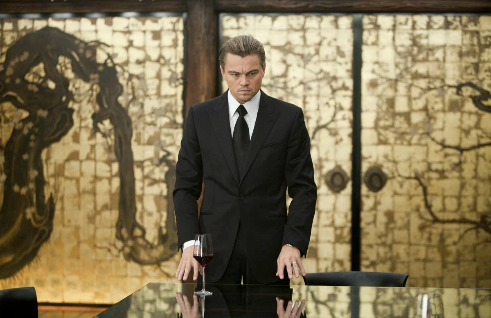
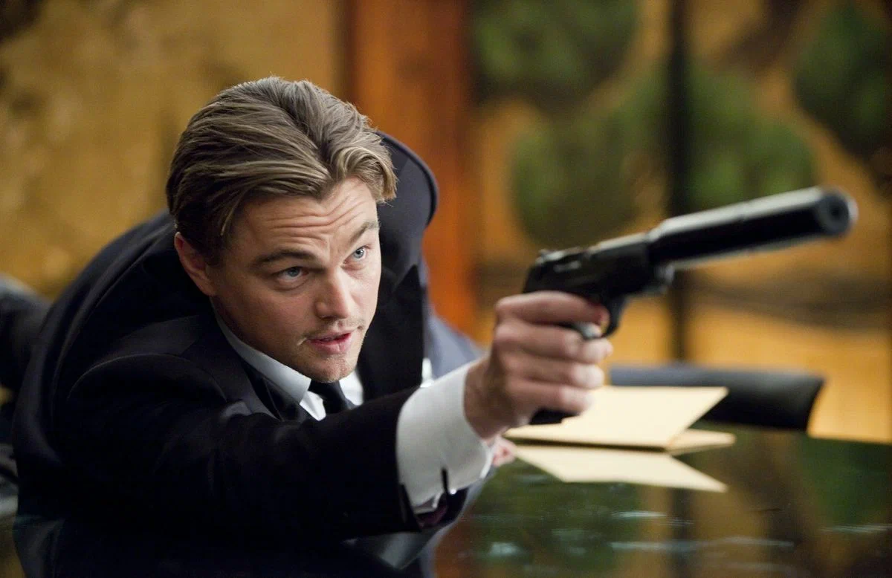
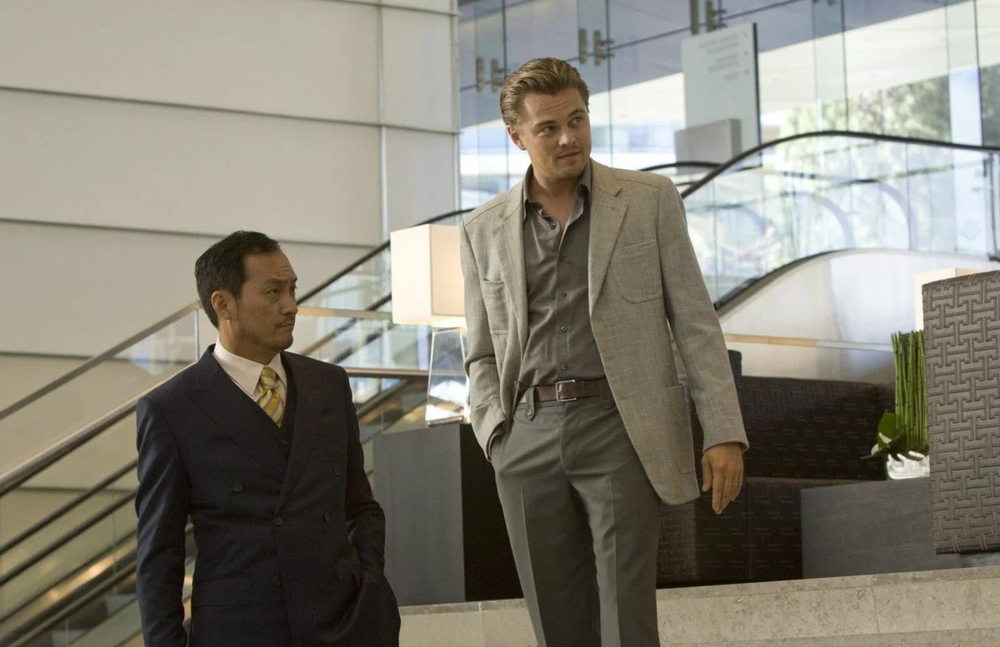
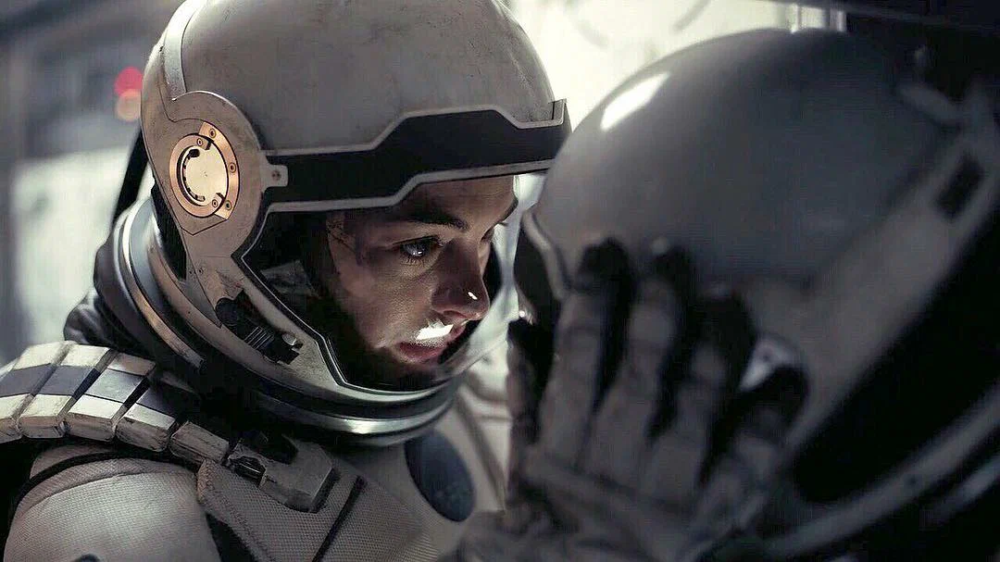
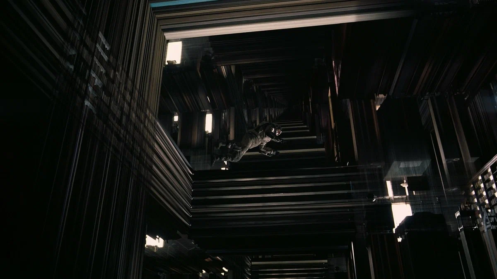
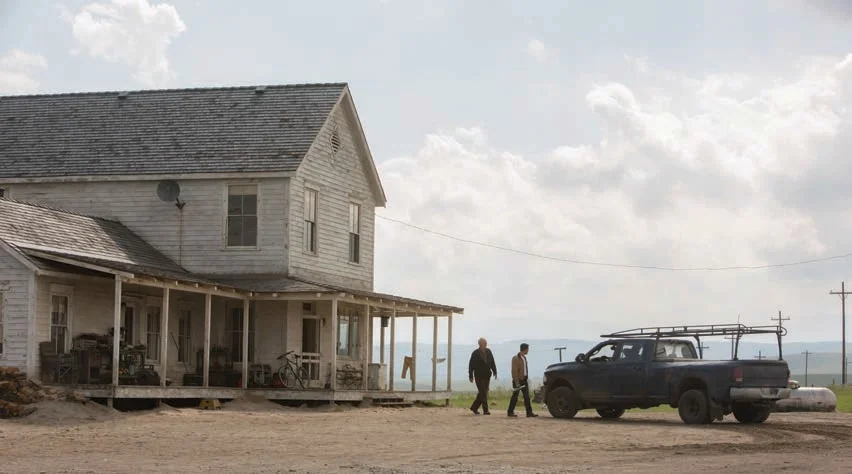

«Матрица» (англ. The Matrix) — научно-фантастический боевик, поставленный братьями Вачовски по собственному сценарию и спродюсированный Джоэлом Сильвером. Главные роли исполнили Киану Ривз, Лоренс Фишберн, Керри-Энн Мосс и Хьюго Уивинг. Фильм вышел на экраны в США 31 марта 1999 года и послужил созданию одноимённой медиафраншизы, в которую вошли ещё три фильма, комиксы, компьютерные игры и аниме.
| Год выпуска | Жанр | Режиссер | Продолжительность |
| 1999 | научно-фантастический боевик | братья Вачовски | 136 мин |



«Нача́ло» (англ. Inception, буквально — начало процесса или организации, зарождение, исток; в фильме означает «внедрение идеи») — фильм-ограбление в жанре научно-фантастического боевика 2010 года, седьмой полнометражный фильм режиссёра Кристофера Нолана, который продюсировал со своей женой Эммой Томас и основал его на идее осознанных сновидений.
| Год выпуска | Жанр | Режиссер | Продолжительность |
| 2010 | научная фантастика боевик | Кристофер Нолан | 148 минут |



«Интерсте́ллар» (англ. Interstellar — «Межзвёздный») — эпический научно-фантастический фильм 2014 года, девятый полнометражный фильм режиссёра Кристофера Нолана, который написал сценарий в соавторстве со своим братом Джонатаном. В фильме задействован актёрский ансамбль во главе с Мэттью Макконахи, Энн Хэтэуэй, Джессикой Честейн, Биллом Ирвином, Эллен Бёрстин и Майклом Кейном. Действие фильма разворачивается в антиутопическом будущем, где Земля страдает от катастрофического упадка и голода. Фильм рассказывает о группе астронавтов, которые путешествуют через кротовую нору вблизи Сатурна в поисках нового дома для человечества.
| Год выпуска | Жанр | Режиссер | Продолжительность |
| 2014 | научная фантастика приключения | Кристофер Нолан | 169 минут |